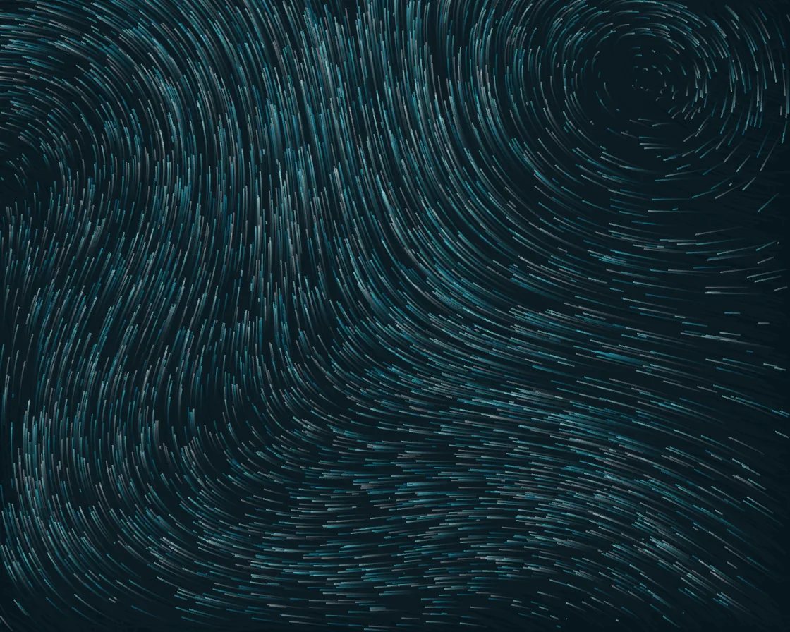

Curl-noise flow field
Curl-noise flow field is a Canvas effect: divergence-free curl noise; particles never clump. One plain JavaScript file with no dependencies; add it with npx motion-library add curl-flow.

Open it live, tune it and copy the code
What is Curl-noise flow field?
Particles swirl in smooth streams that leave soft trails and never pile up.
How does Curl-noise flow field work?
Each particle follows the curl of a noise field, which has no sources or sinks; a translucent fill each frame instead of a clear keeps the trails.
How do I add Curl-noise flow field to my website?
- In your project folder, run
npx motion-library add curl-flow. It writesanimations/curl-flow.js. Needs Node 18 or newer. - Import it and call it with a container element that has a size:
import fx from './animations/curl-flow.js'; const stop = fx(document.querySelector('#hero')); - Call
stop()to clean up, for example when a component unmounts.
Every setting below is also a flag, so you can install it already tuned: npx motion-library add curl-flow --count 8000.
What settings can I tweak?
| Setting | Flag | Default | Range | Step |
|---|---|---|---|---|
| Particles | --count | 4000 | 500 to 8000 | 100 |
| Speed | --speed | 1 | 0.2 to 3 | 0.1 |
| Field scale | --scale | 0.0025 | 0.0008 to 0.006 | 0.0001 |
Specifications
- Renderer
- Canvas 2D
- Category
- Flow & particles
- Dependencies
- None
- File size
- 2.6 KB, unminified
- Interactive
- No: it plays on its own
- Reduced motion
- Plays the same for everyone
- Licence
- MIT-0: use it anywhere, no credit needed
Source code
// Curl-noise flow field: particles follow the curl of a smooth stream function, which has no sources or sinks,
// so they swirl without ever bunching up. A faint fill each frame leaves the trails.
const PARAMS = { count: 4000, speed: 1, scale: 0.0025 };
export default function (stage) {
const canvas = document.createElement('canvas');
canvas.style.cssText = 'position:absolute;inset:0;width:100%;height:100%;display:block';
stage.append(canvas);
const ctx = canvas.getContext('2d');
let W = 0, H = 0;
const resize = () => { const d = Math.min(devicePixelRatio, 2); W = stage.clientWidth; H = stage.clientHeight; canvas.width = W * d; canvas.height = H * d; ctx.setTransform(d, 0, 0, d, 0, 0); ctx.fillStyle = '#07161c'; ctx.fillRect(0, 0, W, H); };
const ro = new ResizeObserver(resize); ro.observe(stage); resize();
// stream function ψ = Σ a·sin(kx·x + p)·cos(ky·y + q); velocity = (∂ψ/∂y, −∂ψ/∂x)
const waves = [[1, 1.0, 1.3, 0.0, 0.7], [0.6, 2.1, 1.7, 1.3, 2.2], [0.35, 3.7, 4.1, 2.6, 0.4]];
const field = (x, y, t) => {
let vx = 0, vy = 0; const s = PARAMS.scale;
for (const [a, kx, ky, p, q] of waves) {
const X = kx * x * s + p + t * 0.15 * kx, Y = ky * y * s + q - t * 0.1 * ky;
vx += -a * ky * Math.sin(X) * Math.sin(Y); // ∂ψ/∂y
vy += -a * kx * Math.cos(X) * Math.cos(Y); // −∂ψ/∂x
}
return [vx, vy];
};
const n = Math.round(PARAMS.count);
const P = new Float32Array(n * 3);
const spawn = i => { P[i * 3] = Math.random() * W; P[i * 3 + 1] = Math.random() * H; P[i * 3 + 2] = 60 + Math.random() * 200; };
for (let i = 0; i < n; i++) spawn(i);
const palette = ['#3bc9db', '#99e9f2', '#0a87a6', '#ffffff'];
let raf;
function frame(now) {
const t = now / 1000;
ctx.fillStyle = 'rgba(7, 22, 28, 0.09)'; ctx.fillRect(0, 0, W, H);
ctx.lineWidth = 1;
for (let c = 0; c < palette.length; c++) {
ctx.strokeStyle = palette[c]; ctx.globalAlpha = c === 3 ? 0.35 : 0.55; ctx.beginPath();
for (let i = c; i < n; i += palette.length) {
const x = P[i * 3], y = P[i * 3 + 1];
const [vx, vy] = field(x, y, t);
const nx = x + vx * PARAMS.speed * 0.9, ny = y + vy * PARAMS.speed * 0.9;
ctx.moveTo(x, y); ctx.lineTo(nx, ny);
P[i * 3] = nx; P[i * 3 + 1] = ny;
if (--P[i * 3 + 2] < 0 || nx < 0 || nx > W || ny < 0 || ny > H) spawn(i);
}
ctx.stroke();
}
ctx.globalAlpha = 1;
raf = requestAnimationFrame(frame);
}
raf = requestAnimationFrame(frame);
return () => { cancelAnimationFrame(raf); ro.disconnect(); canvas.remove(); };
}